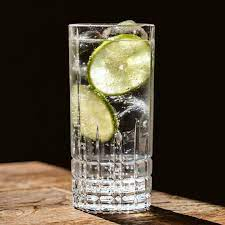

<!DOCTYPE html>
<html lang="en">
<head>
    <meta charset="UTF-8">
    <meta name="viewport" content="width=device-width, initial-scale=1.0">
    <title>Gin N Tonic/title>
</head>
<body>
    <h1>Gin N Tonic</h1>
    <p>
        
    </p>
    <p><h3>Ingredients</h3></p>
    <p>
        <ul>
            <li>Gin of Choice</li>
            <li>Lime</li>
            <li>Tonic</li>
            <li>Simple Syrup</li>
            <li>Ice</li>
        </ul>
    </p>
    <p><h3>Instructions</h3></p>
    <p>
        <ol>
            <li>Start by prepping your limes. Cut limes and juice into seperate vessel. You want 1.5 oz of lime juice per drink.</li>
            <li>Add 2 oz of gin to shaker.</li>
            <li>Add 1.5 oz of lime juice, and 1 oz of simple syrup to shaker.</li>
            <li>Add 8oz of semi-crushed ice.</li>
            <li>Shake! for 60 seconds.</li>
            <li>Strain into glass, add tonic water to taste - ~4-6oz.</li>
            <li>Enjoy.</li>
        </ol>
    </p>    
</body>
</html>